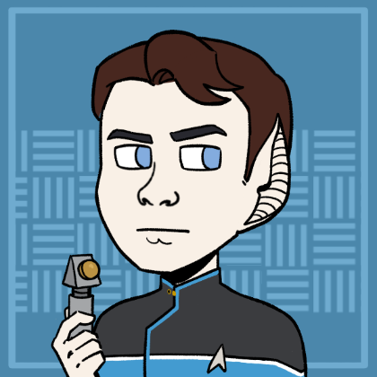
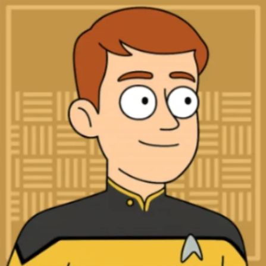
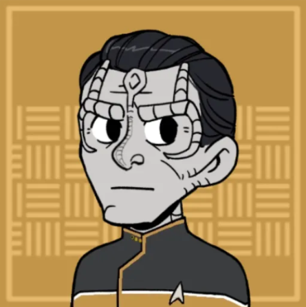

USS Hyperion
Summary
Location:: Start Playing Games/Games/Campaigns/The Shackleton Expanse
Portrait::
Note:: A Nova class science vessel with a mission to chart the Shackleton Expanse and be among the first Federation vessels to discover what lies within.
Description
Traits
- Federation Starship
- Nova Class
- Dependable Workhorse
Namesake
The USS-Hyperion inherits it's name from a Moon of Saturn.
Mission
The USS Hyperion is tasks with charting the Shackleton Expanse. It is one of just a few vessels to be the first discovering what lies in this unexplored region of space.
Mission Logs
- Hyperion Log 0 - All Aboard:
Stardate 2030
The crew of the USS Hyperion is assembled by captain Robin Zhao for a new mission to explore the Shackleton Expanse. - Hyperion Log 1.1 - Bacchus' Irresistible Call:
Stardate 62023
The USS Hyperion was sent to investigate the disappearance of a Starfleet science shuttle at the Bacchus system. When the Hyperion arrive, it was violently thrown out of warp by a massive subspace distortion wave. With warp-speed rendered impossible and subspace communications completely washed out by background subspace frequencies in the system, an away was sent down to Bacchus-3 to investigate the source of the distortion waves.
There, a small coalition team of Starfleet and Klingon officers seemed entranced by the giant monoliths sticking out of the surface of the planet. Soon, the scientists opened the monoliths, revealing a facility on the inside. Two of the closest scientists throw themselves into the facility, getting vaporized instantly. - Hyperion Log 1.2 - Bacchus' Irresistible Call:
Stardate 62023
The away team on Bacchus-3 returned to the Hyperion with the missing science team. The science team was brought directly to the sick bay, where Lt. Cmdr. Lt. T'Lor performed a mind meld with the science officer Janna Frye, and discovered an alien recorded embedded in a repeating neural loop.
Meanwhile, Commander Gorath and visited the Klingon IKR Ya'Leth. The Klingons were struggling to get their warp core back online and were given instructions to repair it by SILAR and Bucannon.
The Klingon Captain K'tah was there looking for his brother, Brutog, who had visited the planet with Janna Frye. K'tah chastised Starfleet for entering the Shackleton Expanse, calling the sector "cursed." In the end, Rhen Gorath was able to appeal to K'tah's sense of honor and challenged him to be more daring. - Hyperion Log 1.3 - Bacchus' Irresistible Call:
Stardate 62023
After the missing science team had been successfully treated, the crew of Hyperion decided to tackle escape from two fronts. First, an away team would return to the planet to investigate the facility, hoping to find an off switch. At the same time, a team on the Hyperion would attempt to outfit the starship to escape the Bacchus system by riding the Subspace wave out.
The away team disabled the security system at the entrance to the monolith and navigated to the control room at the center. There a computer system informed them that the Facility was built to contained something or someone called The Displaced. Verlath was able to recognize genetic codes in the displays with telltale signs of modifications.
In the end, the team disabled the subspace distortion wave, which triggered an emergency response from the facility. A breadbox sized artifact that the computer described as a "key" was revealed, which the away team took with them. The planet produced a massive tractor beam and pulled the planet Bacchus-2 out of orbit. It began using the rocky material of the planet to create new Monoliths.
On the Hyperion, Buchanon and SILAR worked to integrate SILAR more deeply into the ship's control systems. The ship's sensors were connected directly to the nacelles to respond more quickly to changes in subspace. And SILAR's decision making processes were set as the control point for ship. SILAR was able to respond more quickly to changes in the gravitational profile of the system. Rhen Gorath piloted the waverider to meet with the Hyperion, and they all warped out of the system, back to Narendra Station.
Admiral Banna Stoker debriefed the team on Narendra Station, and took the artifact for study, assigning science officer Kassandra Pruitt to investigate. - Hyperion Log 2 - Imminent Collision:
Stardate 62078.6
After Narendra Station picked up an unidentified object approaching the station at high warp speeds, the USS Hyperion was sent to investigate while the station prepared for a potential attack. They found a strange crystalline starship and started rudimentary and cooperative communication with it.
The crew found an unidentified torpedo lodged into the side of the crystalline structure, seemingly made just for the purpose of attacking this kind of starship. As the hull of the ship seemed to be a living entity of some sort, Verlath organized a surgical transport procedure to remove the torpedo safely.
Once the torpedo was removed, the aliens in the ship revealed themselves: strange crystal beings who communicated through light refraction. They said thank you, and then left.
Crew Members
Department Heads
| Role5 | Rank + " " + file.link + "" | " (" + pronouns + ") - " + Species | "" + Type + "" | Portrait | " > " + Note |
|---|---|---|---|---|---|
| Commanding Officer | Captain Kala Cerjaso | (She / Her) - Bajoran | Supporting Character |  | On her first assignment as captain and in over her head. |
| Executive Officer | Commander Rhen Gorath | (he/him) - Trill | Player Character |  | Looking to prove himself and gain the captain's trust, after having betrayed his ideals for a former superior officer. |
| Science Officer | Lieutenant Commander SILAR | (he/him) - Hologram | Player Character | Among the first holographic persons to be commissioned as full starfleet officers. Designed by the Vulcan Science Academy. | |
| Chief Medical Officer | Lieutenant Verlath | (he/him) - Vorta | Player Character |  | Joined up with Starfleet after defecting from the Dominion. |
| Chief Engineer | Lieutenant Lachlan Buchanan | (he/him) - Human | Player Character |  | One of the first explorers to discover the "washboard" effect in the Shackleton Expanse. Now mentoring younger officers on the USS Hyperion. |
Command Division
| Role2 | Rank + " " + file.link + "" | "(" + pronouns + ") - " + Species | "" + Type + "" | Portrait | "> " + Note |
|---|---|---|---|---|---|
| Commanding Officer | Captain Kala Cerjaso | (She / Her) - Bajoran | Supporting Character | | On her first assignment as captain and in over her head. |
| Executive Officer | Commander Rhen Gorath | (he/him) - Trill | Player Character | | Looking to prove himself and gain the captain's trust, after having betrayed his ideals for a former superior officer. |
Sciences Division
| Role4 | Rank + " " + file.link + "" | "(" + pronouns + ") - " + Species | "" + Type + "" | Portrait | "> " + Note |
|---|---|---|---|---|---|
| Science Officer | Lieutenant Commander SILAR | (he/him) - Hologram | Player Character | Among the first holographic persons to be commissioned as full starfleet officers. Designed by the Vulcan Science Academy. | |
| Chief Medical Officer | Lieutenant Verlath | (he/him) - Vorta | Player Character | Joined up with Starfleet after defecting from the Dominion. | |
| Ship Doctor | Lieutenant T'Lor | (she/her) - Vulcan | Supporting Character |  | A thorough investigator of medicine whose always looking for her next problem to solve. |
| Subspace Specialist | Lieutenant Rega, Daughter of Ma'tagh | (she/her) - Klingon | Supporting Character |  | Searching for glory in Starfleet, hoping it supports her passion for science in a way the Klingon Empire did not. |
Operations Division
| Role3 | Rank + " " + file.link + "" | "(" + pronouns + ") - " + Species | "" + Type + "" | Portrait | "> " + Note |
|---|---|---|---|---|---|
| Chief of Security | Lieutenant Commander Enat Tara | (he/him) - Cardassian | Supporting Character |  | Among the first Cardassians in Starfleet, seeking to represent his people and earn Starfleet respect. |
| Flight Controller | Lieutenant Thaval th'Kerre | (he/him) - Andorian | Supporting Character |  | Assigned to the Hyperion after having his career saved by Rhen Gorath |
| Chief Engineer | Lieutenant Lachlan Buchanan | (he/him) - Human | Player Character | One of the first explorers to discover the "washboard" effect in the Shackleton Expanse. Now mentoring younger officers on the USS Hyperion. |
Passengers
| Role0 | Rank + " " + file.link + "" | "(" + pronouns + ") - " + Species | "" + Type + "" | Portrait | "> " + Note | "VALUES" | Value1 | Value2 | Value3 | Value4 |
|---|
Ship Locations
Facilities
| File0 | "> " + Note |
|---|
Shuttles
| File0 | "> " + Note |
|---|